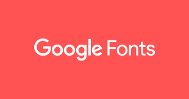

Welcome to the Reviews page, here we will talk about really good web development related software and resources that I think Are really good we will cover 3 Different Resources.
Google Fonts
Firstly we will talk about Google Fonts
Firstly, i'd like to talk about Google Fonts, Google Fonts is a web based Resource that allows you to Search Through many Different fonts and Directly upload them to your Page, Using HTML and CSS, and the best part is that it's an really easy resource to use, and there are so many different types to use! To use this resource all you have to do is choose what font you want to use, then it gives you n HTML and an CSS Link just put each one into each page and it will be ready to use!
Git Kraken
The next Resource we will look at is a piece of software called Git Kraken
Gitkraken is a software that is essentually a middleman between the software you're using to make the webdite and Git Hub. Hopefully you hsould know about guthub by now but just incase you havn't in short github is a repository for all of the work you do, everytime you make a small or big change you can back up all your data to the repository it's basically a cloud for programming. So with that, Gitkraken is a really handy program that lets you see your repository and all the changes that you or anyone else makes

Above is an example of What GitKraken looks like when it is being used by many people, the ability to View what everyone on a project is woking on is a really nice feature, and it shows where your current version is on the chart and allows you to easily view previous versions. Also as a small feature that is really nice, you can highlight different parts and view what percent of that is in what code. So GitKraken is a valuiable piece of software that has made mine and so many others lives alot simpler, would highly recommend trying it.
Visual Studio Code

Visual Studio Code is a Software that allows you to code in alot of languages, but the most notiable one is HTML 5 and CSS 3,